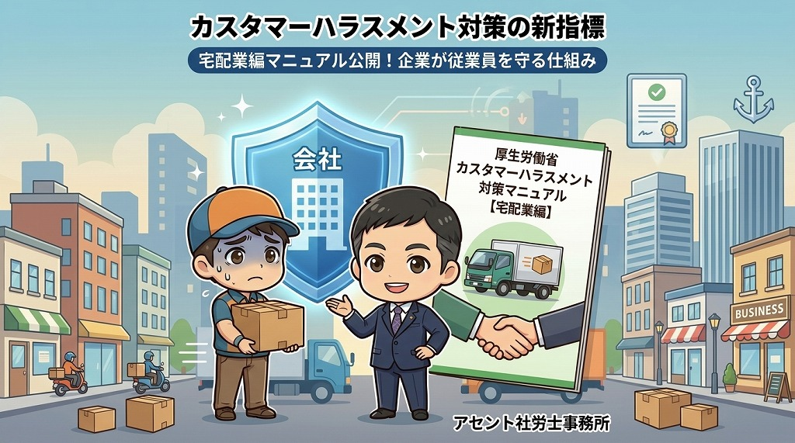

カスタマーハラスメント対策は業種別対応が鍵となる

大阪を拠点に活動するアセント社労士事務所です。当事務所では、企業の働き方を「上昇（アセント）」させるための有益な情報を発信しています。
今回は、厚生労働省から新たに公表（2026.3）された「業種別カスタマーハラスメント対策企業マニュアル」を題材に、カスハラ対策の本質について解説します。
厚生労働省は、カスタマーハラスメント（以下、カスハラ）への対策として、業種ごとの特性に応じたマニュアル作成を進めています。
宅配便業編の新規公表
先日（2026.3）、厚生労働省より「業種別カスタマーハラスメント対策企業マニュアル（宅配便業編）」が発行されました。
拡大するマニュアルのラインナップ
厚生労働省のウェブサイトを確認すると、すでに「スーパーマーケット編」も作成されています。今後もBtoC（一般消費者向け）サービスを中心に、さまざまな業界向けのマニュアルが順次公開される見通しなのかもしれません。
少し思いつく限りでも、以下の業界などについて今後作成されることが想像されます。
- 娯楽業（パチンコ店、ゲームセンターなど）
- 介護・医療業界
- 鉄道業界
- 飲食業
また、BtoB（法人企業間取引）においても、取引上の優越的な立場を利用したカスハラは起こり得ます。一取引あたりの金額が大きいBtoB特有の対策も、今後は求められるでしょう。
カスハラは、他のハラスメントとは性質が大きく異なります。そのため、一律の対応ではなく業種に合わせた視点が必要となります。
パワハラ・セクハラ等との違い
パワーハラスメント（パワハラ）やセクシュアルハラスメント（セクハラ）は、どの業界でも発生する事象が似通っていて、業界によって対応が異なるというようなことはあまりありません。
- パワハラ： 暴言、過大な要求、無視、私生活への過度な干渉など、典型的な6類型に分類されます。
- セクハラ： 「環境型（不快な言動による就業環境の悪化）」と「対価型（要求の拒否による不利益）」の2つに大別されます。
これらは社内の人間関係に起因するため、対策の枠組みを共通化しやすいのが特徴です。
顧客の質と業界の特色
一方で、カスハラは対応する「顧客」の性質が業界によって大きく異なります。顧客の層やサービス提供の形態が異なるため、厚労省はあえて業界ごとに踏み込んだマニュアルを作成しているのです。
カスハラ対策の方向性を定める際、一つの大きな指標となるのが「出入り禁止（出禁）」措置のしやすさです。
出禁にしやすい業種 vs 困難な業種
出禁にしやすい業種
代替の効くサービス業は、比較的「出禁」の判断が容易です。
- パチンコ店
- ゲームセンター
- 飲食店
- 衣料品店
これらの業態では、ルールに従えない顧客に対して「次回の来店を断る」という一義的な対応が取りやすい傾向にあります。
出禁が困難な業種（生活インフラ）
一方で、生活に不可欠なサービスを提供している業種は、対応の難易度が格段に上がります。
- 病院（医療機関）
- 鉄道（公共交通機関）
- 近隣に一軒しかないスーパーマーケット
「気に入らないのであれば利用しないでください」と伝えることが困難な環境では、現場の負担が増大します。そのため、会社組織として明確な介入基準を策定することが、他業種以上に重要となります。
今回公表された「宅配便業編」の対象となる業界は、特に対策が難しい分野の一つです。
宅配便業が抱える課題と組織的関与
サービスの選択権がない構造
宅配便業では、受取人が配送業者を指定できないケースが多くあります。例えばECサイトでの購入時、配送がどの業者になるかはショップ側の判断となります。
業者が「この顧客はカスハラを行うので配送を断る」という判断をすることは現実的に困難です。また、ドライバーは一人で顧客宅を訪問するため、トラブル発生時にその場で守ってくれる同僚がいないという孤立性も大きな課題です。
会社による組織的な関与の重要性
現場のドライバーだけで解決させるのではなく、会社が組織として関与する姿勢が不可欠です。
- どのような言動がカスハラに該当するかの基準明確化
- 現場から報告があった際のバックアップ体制の構築
- 法的な措置を含めた毅然とした対応
これらをあらかじめマニュアル化しておくことが、従業員の安全を守る唯一の手段となります。
まとめ：本質的な「幹」を捉えた対策を
カスハラ対策は枝葉の議論に陥りがちですが、まずは自社の業種における「本質」を見極めることが大切です。
- 厚生労働省が業種別のマニュアル整備を加速させている。
- カスハラ対策は「顧客の質」や「業界の特色」に左右される。
- 「出入り禁止」措置の容易さが対策の方向性を分ける。
- 生活インフラ業や単独作業の多い業種ほど、組織的な関与が必要。
自社の業種に該当するマニュアルを読み込むことはもちろん、他業種の事例も参考にしながら、自社独自の「対応基準」を構築していきましょう。アセント社労士事務所は、大阪の企業の皆様が安心して働ける環境づくりをサポートいたします。
労務管理の効率化も、ぜひご相談ください
アセント社労士事務所は、最新ツールも活用しながら、大阪のサービス業の働き方をサポートしています。
労務トラブル、シフト管理、就業規則など、お気軽にご相談ください。